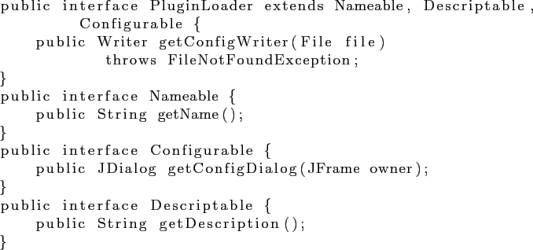
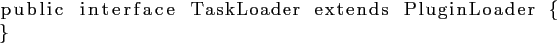

Все упоминаемые интерфейсы содержатся в файле common.jar, некоторые необязательные, но, возможно, полезные, при написании собственного модуля классы, содержатся в файле util.jar.
Создание плагина заключается в реализации соответствующего (основного) интерфейса и сборке jar-архива.
Для подключения плагина манифест полученного архива должен содержать атрибут Main-Class,
который в свою очередь должен ссылаться на класс реализующий один из интерфейсов, наследников PluginLoader.

Класс, реализующий этот наследника данного интерфейс, должен иметь конструктор, от объекта класса (JarFile) (исключение плагин особи). То есть от того архива, где хранится сам плагин.
Основной интерфейс плагина — TaskLoader.

Данный интерфейс не содержит дополнительных методов.